3 minutes
- 5G Cloud Native Simulation with Open5Gs
Specification : Kubernetes, HELM, Istio, Open5Gs, ROOK, CEPH, Rancher
Lab Topology

Create Namespaces for practices
kubectl create ns open5gs
Install Service mesh Istio (optional)
curl -L https://istio.io/downloadIstio | sh -
cd istio-1.12.1
export PATH=$PWD/bin:$PATH
istioctl install --set profile=demo -y
Add a namespace label to instruct Istio to automatically inject Envoy sidecar proxies when you deploy your application later:
kubectl label namespace open5gs istio-injection=enabled
Install Addons packages
cd ~/istio-1.12.1/samples/addons
kubectl apply -f prometheus.yaml #for data sources monitoring
kubectl apply -f kiali.yaml #for dashboard visualization istio
kubectl apply -f jaeger.yaml #for tracing log
kubectl apply -f grafana.yaml #for dashboard monitoring (visualization)
Install Rancher (optional)
helm repo add rancher-latest https://releases.rancher.com/server-charts/latest
kubectl create namespace cattle-system
Install crds Cert Manager
kubectl apply -f https://github.com/jetstack/cert-manager/releases/download/v1.5.1/cert-manager.crds.yaml
Add the Jetstack Helm repository
helm repo add jetstack https://charts.jetstack.io
Update your local Helm chart repository cache
helm repo update
Install the cert-manager Helm chart
helm install cert-manager jetstack/cert-manager \
--namespace cert-manager \
--create-namespace \
--version v1.5.1
kubectl get pods --namespace cert-manager
Install Rancher with Helm
helm install rancher rancher-latest/rancher \
--namespace cattle-system \
--set hostname=rancher.my.org \
--set replicas=3
Wait for Rancher to be rolled out
kubectl -n cattle-system rollout status deploy/rancher
Verify that the Rancher Server is Successfully Deployed
kubectl -n cattle-system get deploy rancher
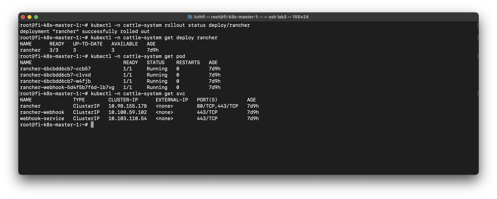
Install HELM
We use HELM for automatic deployment in kubernetes.
curl -fsSL -o get_helm.sh https://raw.githubusercontent.com/helm/helm/main/scripts/get-helm-3
chmod 700 get_helm.sh
./get_helm.sh
helm version
Clone repo for simulation
cd ~
git clone https://bitbucket.org/infinitydon/opensource-5g-core-service-mesh.git
git clone https://github.com/Gradiant/openverso-charts.git
Configure AMF Services (optional)
This services if you want use NodePort & can access from external cluster.
cd ~/opensource-5g-core-service-mesh/helm-chart
sudo nano templates/amf-deploy.yaml
Uncomment in AMF service amf-open5gs-sctp 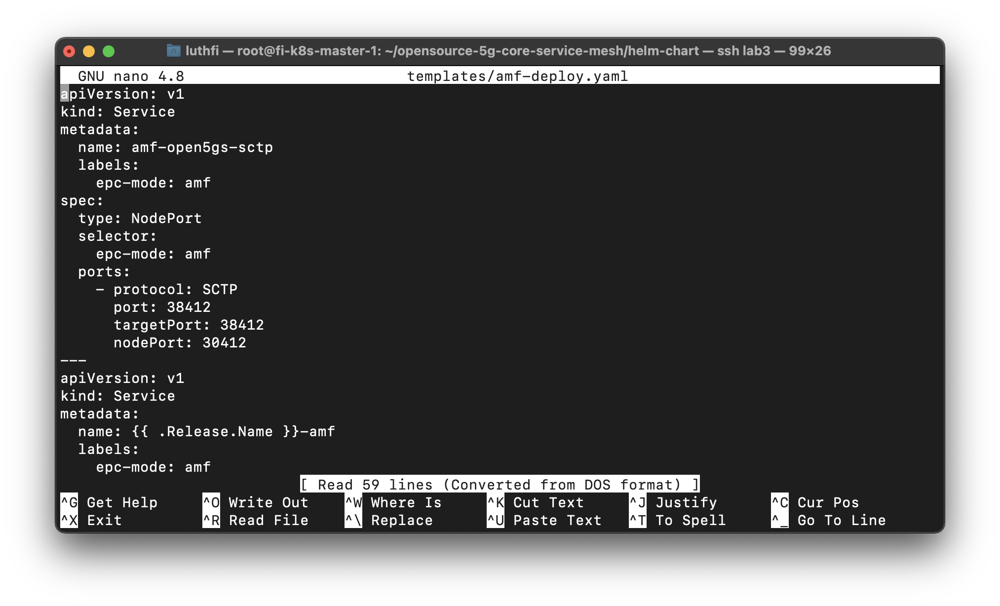
Changed sd to ffffff in amf-configmap
nano templates/amf-configmap.yaml

Change mongodb configuration
We will use ROOK Ceph for persistent volume, need comment existing persistent volume & add StorageClassName in persistent volume claim.
nano templates/mongodb.yaml
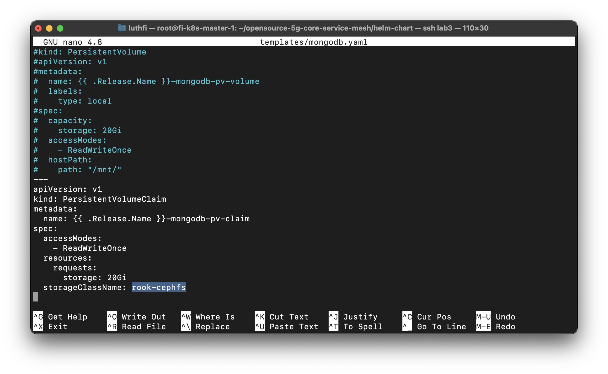
Deploy open5gs with helm-chart
cd ~/opensource-5g-core-service-mesh/helm-chart
helm -n open5gs install -f values.yaml open ./
Make sure all POD & Services already running
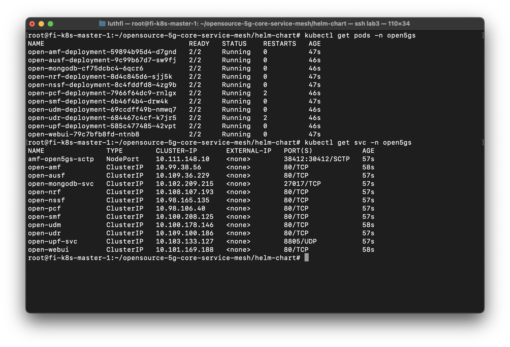
Register UE (User Equipment in Open5Gs dashboard)
Open dashboard use IP webui services 10.101.169.188
Username : admin
Password : 1423
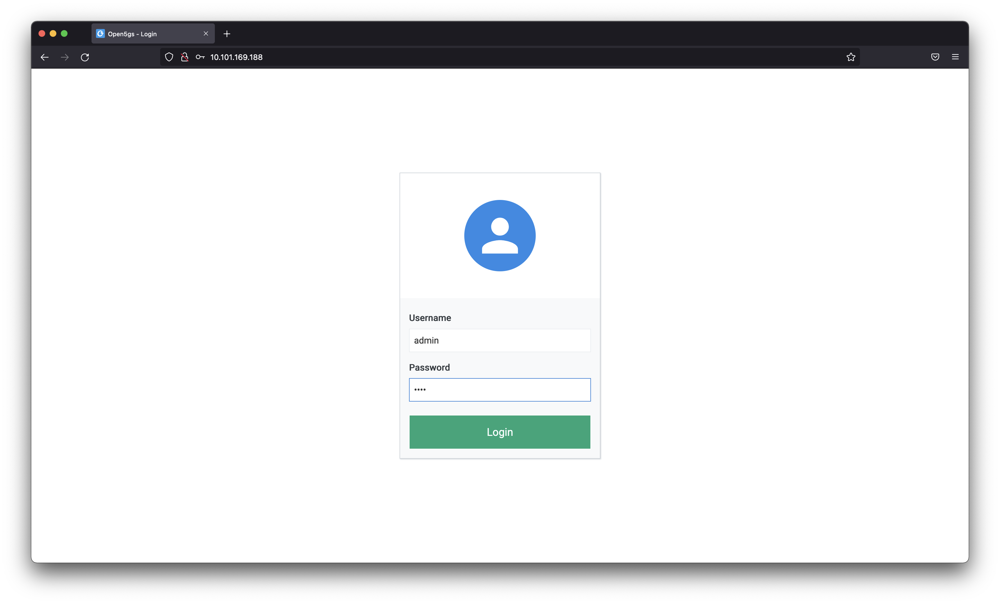
Register User Equipment (UE) with detail bellow :
IMSI : 208930000000001
Key : 465B5CE8B199B49FAA5F0A2EE238A6BC
OP : E8ED289DEBA952E4283B54E88E6183CA
opType: OPC
apn: internet
sst: 1
sd: "ffffff"
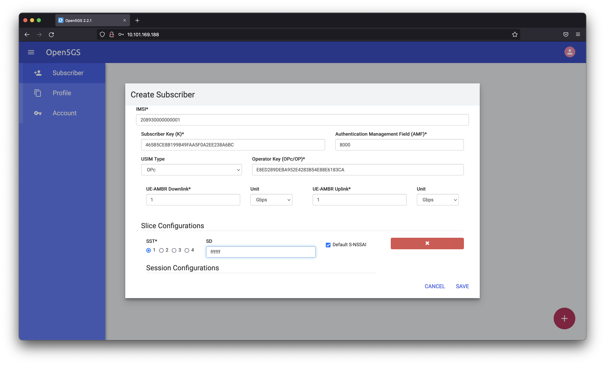
Configure UERANSIM (UE & gNB)
Install UERANSIM Helm depedency
cd ~
cd ~/openverso-charts/charts/ueransim
helm dep update ./
Change value in UE
sudo nano values.yaml
mcc: '208'
mnc: '93'
tac: '7'
Change AMF Address in gNB
You must change address to AMF POD address, check with ‘kubectl get pod -o wide -n open5gs | grep amf’
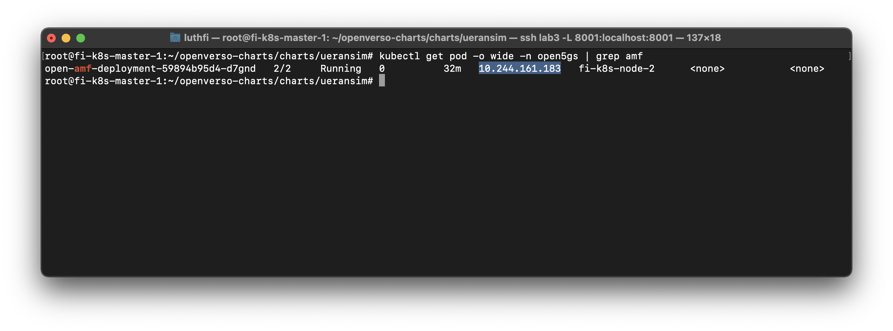
sudo nano resources/gnb.yaml
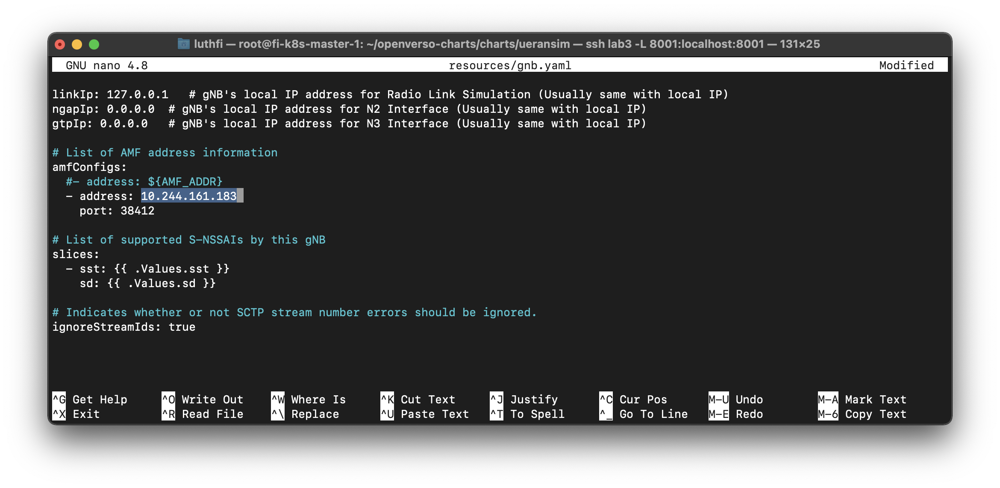
Running UERANSIM
helm -n open5gs install -f values.yaml ueransim ./
kubectl get pod -n open5gs | grep ueransim
Verify Logs UE Connected to gNB & AMF
AMF Logs

gNB Logs 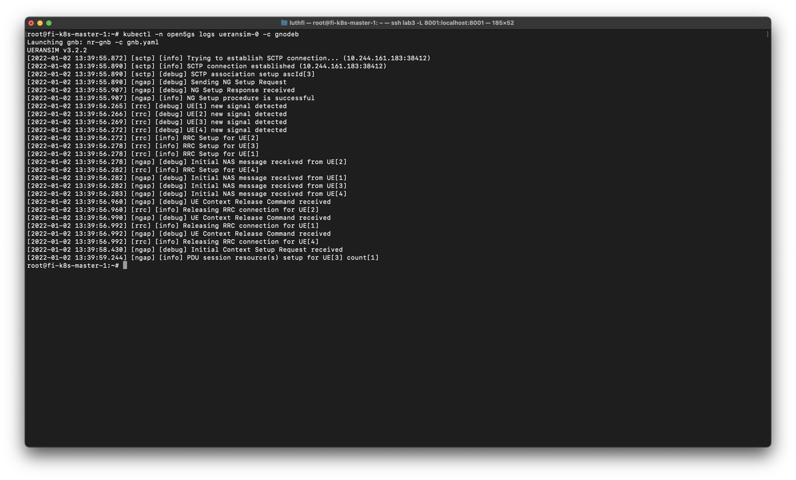
UE Logs 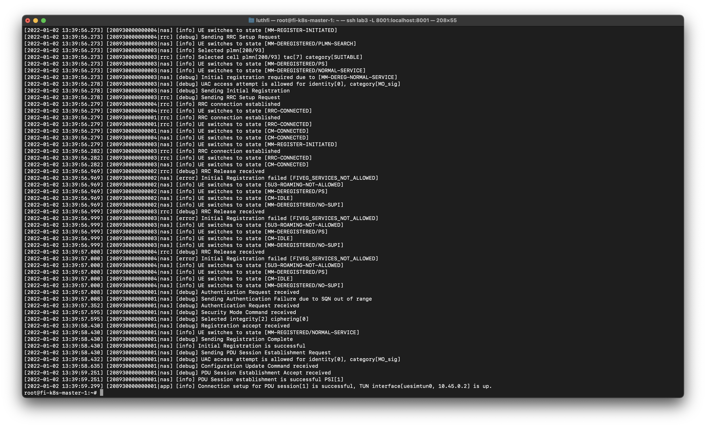
Verify ping to Internet via Rancher dashboard
UE Container
Note : Bellow not show reply, because in TAP Interface (debian) not showing reply, we can see tcpdump in UPF POD.
ping 8.8.8.8 -I uesimtun0

UPF POD
We can see ICMP request reply, from UE IP Address & Google IP.
sudo apt install tcpdump
tcpdump -i ogstun
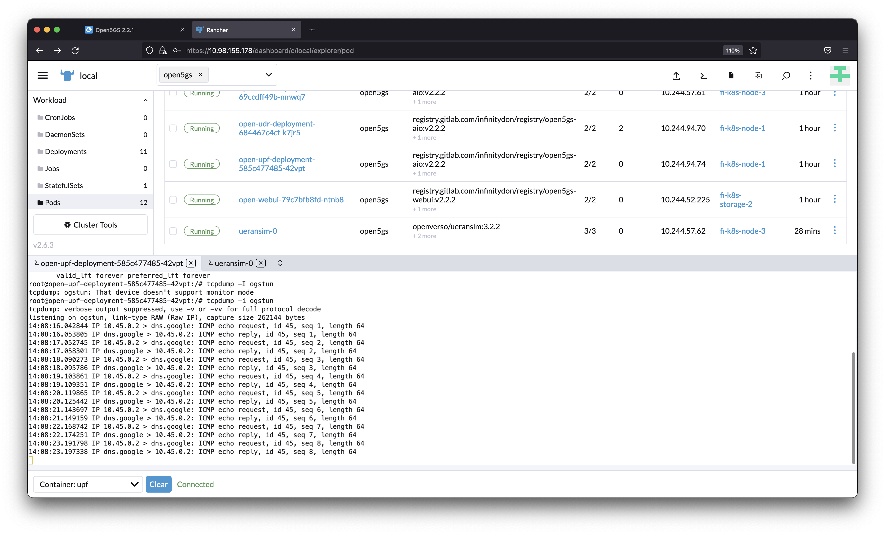
Grafana Dashboard
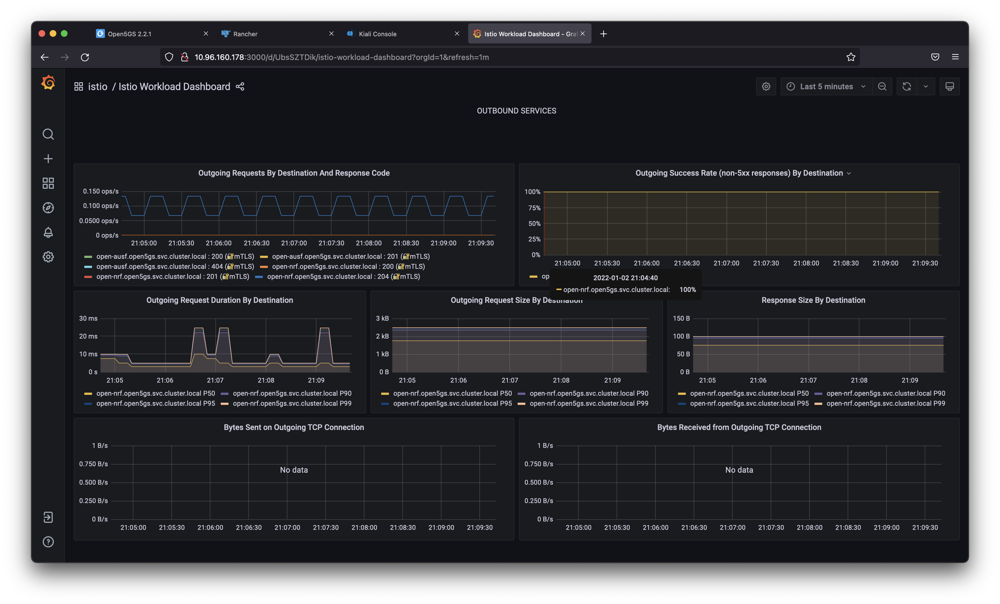
Istio Kiali Dashboard

Reference :
https://medium.com/rahasak/5g-core-network-setup-with-open5gs-and-ueransim-cd0e77025fd7
https://levelup.gitconnected.com/opensource-5g-core-with-service-mesh-bba4ded044fa
521 Words
2021-01-02 07:00 +0700